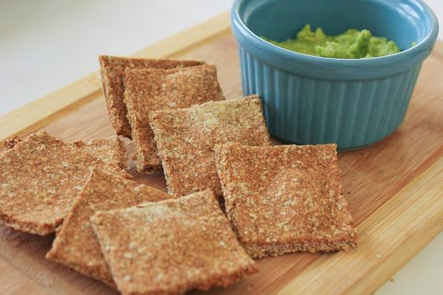
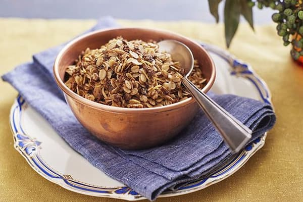
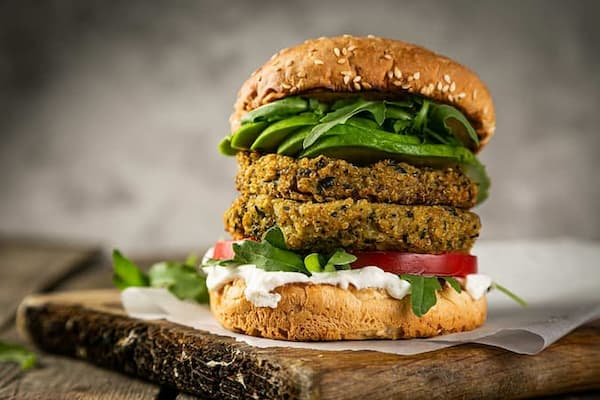
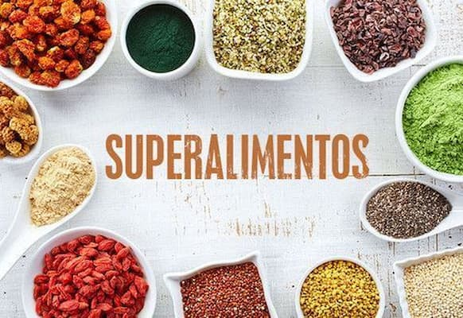
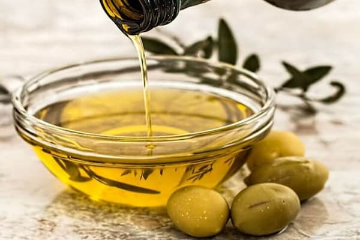
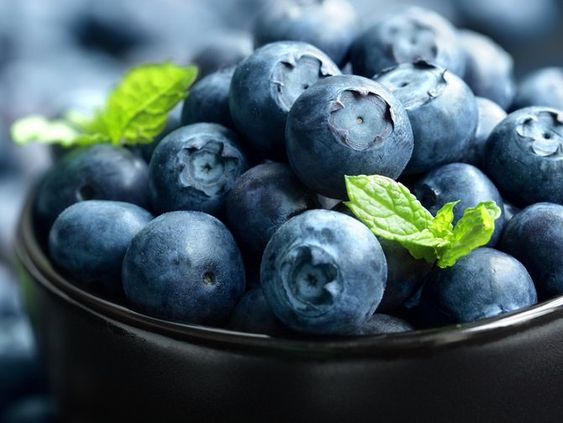
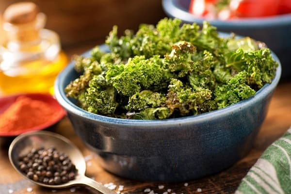
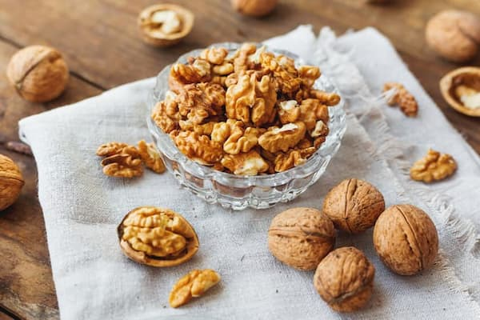
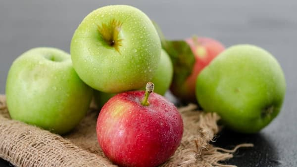
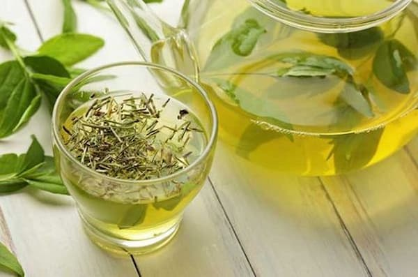

RECETAS
CRACKERS DE HARINA DE GARBANZOS

INGREDIENTES:
- 250 g harina de garbanzos
- 1/2 cdita de té de levadura seca
- 3 cdas soperas de semillas de amapola/chía/sésamo
- 2 cdas soperas de aceite de oliva
- 2 pocillos/120 ml de agua
- Pizca de sal
- Opcional: pimentón dulce, pimienta, ajo granulado, cúrcuma
PREPARACIÓN: Mezclar en un recipiente la harina de garbanzos con la sal, la
levadura, las semillas y condimentar a gusto. Formar un hueco en el centro, añadir
el aceite y 3/4 del agua.
Empezar a mezclar hasta incorporar todo el líquido, echando el resto si es necesario.
Continuar mezclando y amasando ya a mano para formar una masa homogénea. Debe
quedar húmeda pero no muy pegajosa. Dejar reposar 15 minutos.
Estirar la masa sobre una superficie enharinada. Estirar muy bien dejándolas mas
finas o mas gruesas, según gusto.
GRANOLA CROCANTE

INGREDIENTES:
- Granos de trigo sarraceno
- Semillas (chía, lino, sésamo, girasol, amapolas, calabaza
- Frutos secos (nueces, almendras, castañas, maní sin sal, avellanas
- Opcional: coco rallado/en escama, arándanos deshidratados/pasas de uva, higos, dátiles, canela
PREPARACIÓN: Tostar ligeramente los granos de trigo sarraceno con un poquito de aceite de coco (o el que desees). Añadir los demás ingredientes y tostar ligeramente moviendo constantemente no mas de 1 minuto. Dejar enfriar. Guardar en frasco de vidrio bien cerrado.
HAMBURGUESAS DE LENTEJAS

INGREDIENTES:
- 250 g de lentejas crudas
- 50 g de harina de garbanzos
- 1 cebolla
- 3 dientes de ajo picados
- 1 zanahoria rallada
- Sal, perejil c/s
- Aceite de oliva extra virgen c/s
PREPARACIÓN: Poner las lentejas en remojo por 8 horas. Cocinar en agua nueva ycolar. Esperar a que entibien y procesarlas/licuarlas hasta obtener una pasta(pueden quedar lentejas enteras a gusto). En otro bowl, mezclar la cebolla, los ajospicados, la zanahoria rallada, la harina y los condimentos a gusto. Mezclar con lapasta de lentejas y formar las hamburguesas a mano o con molde. Reservar en heladera unos 15-20 minutos y cocinarlas en la sartén a fuego medio/bajo con una pizca de aceite, lado y lado hasta dorar.
PESTO DE KALE
.jpg)
INGREDIENTES:
- 1 atado de kale (o albahaca/rúcula
- 1/2 taza de nueces/almendras (previo remojo de 6-7h)
- 2 cditas de levadura de cerveza (opcional)
- 1 diente de ajo cocido/deshidratado (opcional)
- 4 cdas soperas de aceite de oliva extra virgen
- Pizca de sal
- 1/4 cdita de pimienta negra/jengibre
PREPARACIÓN:Con kale: Cocinarlo al vapor por 5 minutos. Procesar todos los
ingredientes hasta formar una pasta (albahaca y rúcula van crudas). Mantener en frasco cerrado de vidrio y refrigerado.
TOP 10 DE LOS SUPERALIMENTOS







SUSCRIBITE A NUESTRO NEWSLETTER!
Enterate primero de toda la información actualizada y novedades que traemos mes a mes para mejorar tu calidad de vida!
SUMATE A SER PARTE DEL CAMBIO!
.jpg)